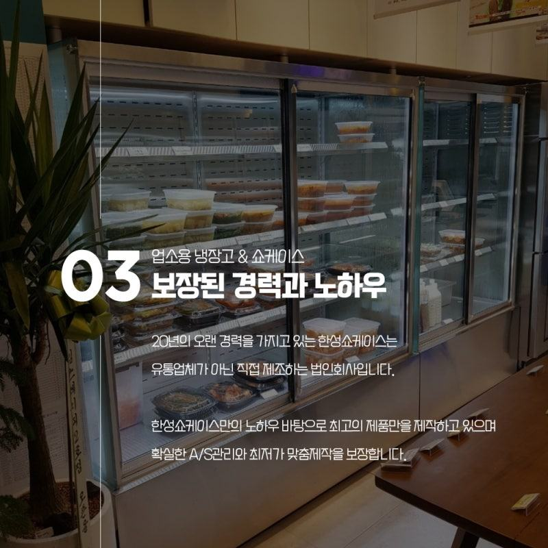
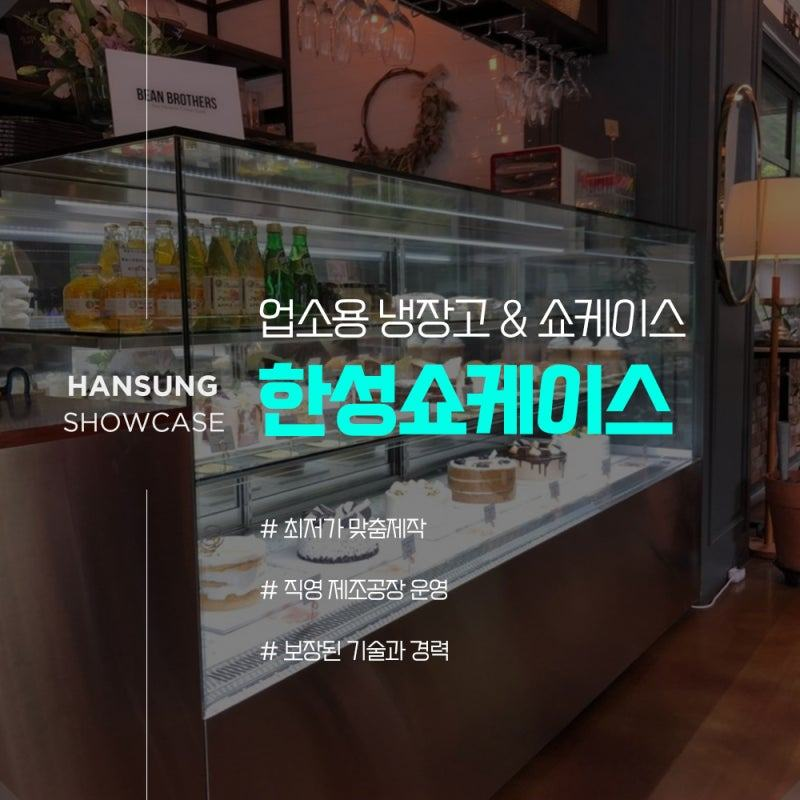
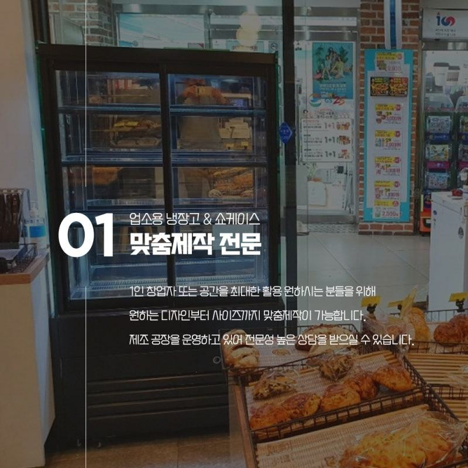
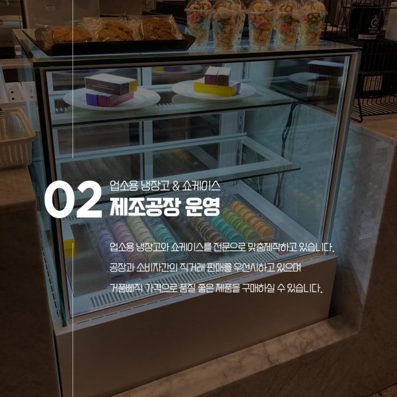
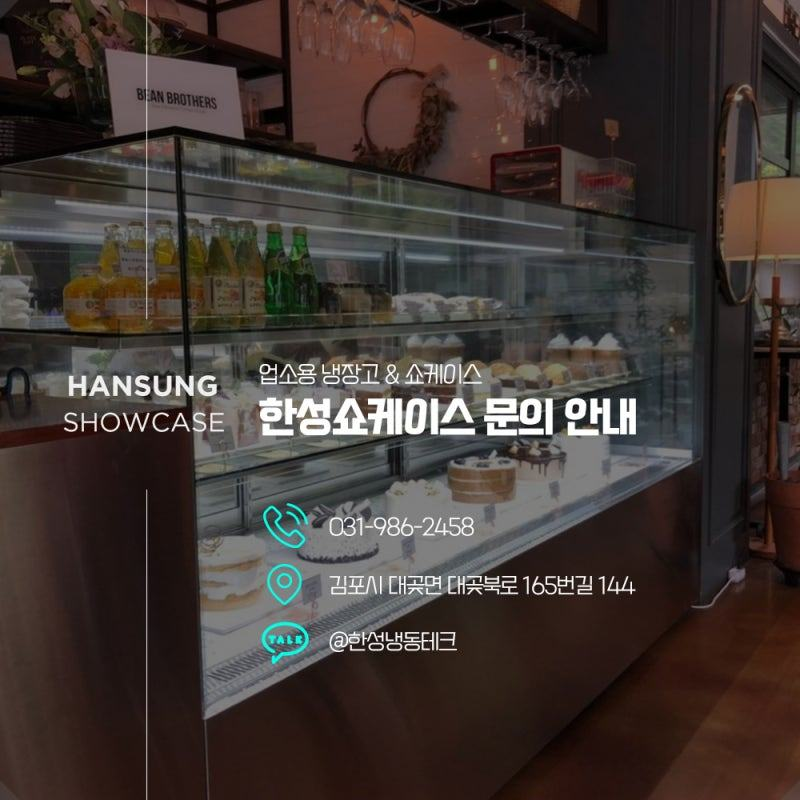

오픈쇼케이스
오픈쇼케이스 중고 매물, 거르는 기준과 살 때 확인할 곳

오픈쇼케이스 중고는 문 대신 에어커튼으로 냉기를 붙잡는 구조라, 선반 앞쪽 온도가 제대로 잡히는지와 송풍구·배수부 상태를 꼭 직접 확인하셔야 합니다. 몇 년 안 된 매물은 새 제품과 차이가 크지 않은 경우가 많고, 오래된 매물은 부식과 냉기 손실 위험이 커서 조건이 맞을 때만 이득입니다.
안녕하세요. 편의점, 샐러드 매장, 반찬가게의 오픈쇼케이스를 매장에 맞춰 만드는 한성쇼케이스입니다.
오픈쇼케이스는 덩치가 큰 장비라 새로 들이려면 부담이 크다 보니, 중고 사이트나 폐업 매장 정리 매물을 먼저 찾아보시는 사장님이 많습니다.
실제로 매물도 꾸준히 나오는 편이고요.
그런데 오픈쇼케이스는 도어형 냉장고와 달리 문이 없습니다. 같은 중고라도 확인해야 할 곳이 다르고, 전 주인이 어떻게 썼는지에 따라 앞쪽 냉기 상태가 크게 갈립니다.
오늘은 오픈쇼케이스 중고 매물을 볼 때 거르는 기준과, 현장에서 직접 확인할 곳을 순서대로 정리해 드리겠습니다.
1. 문 없는 구조라서 봐야 할 곳
오픈쇼케이스는 위쪽 송풍구에서 아래로 찬 공기를 내려보내 공기 막을 만들고, 이 에어커튼이 문 역할을 합니다.
송풍구가 먼지로 막혔거나 팬 하나가 약해지면 커튼이 끊겨 앞쪽 상품부터 온도가 올라갑니다.
매물을 보러 가면 전원을 켜 두고 선반 맨 앞에 손을 대 보세요. 위에서 아래로 고르게 바람이 내려오는지, 특정 칸만 미지근하지 않은지 확인하는 것이 가장 빠른 점검입니다.
가능하면 온도계를 앞쪽과 안쪽에 하나씩 놓고 비교해 보세요.
- 선반 앞쪽에 손을 대 바람이 고르게 내려오는지 보세요.
- 앞쪽과 안쪽 온도를 온도계로 비교해 보세요.
- 송풍구와 흡입 그릴에 먼지나 녹이 없는지 보세요.
2. 녹과 부식, 배수부
오픈쇼케이스는 습기를 그대로 받아 바닥 물받이와 배수부에 물이 자주 고입니다. 메탈 재질은 물이 많이 닿으면 녹이 슬 수 있어 하단 모서리와 선반 받침을 꼭 살펴보세요.
스테인리스는 녹에 강해 관리가 편한 편입니다.
바닥 패널 아래나 뒷면에 녹물 자국, 악취가 있다면 배수가 오랫동안 제대로 되지 않았다는 뜻입니다. 이런 매물은 위생 문제로 이어지기 쉬우니 거르시는 게 좋습니다.


3. 연식과 가격 차이를 함께 보기
중고 매물은 4~5년 정도 사용한 것이 많고, 거의 새것을 찾는 분들은 1~2년 된 제품을 찾으십니다.
그런데 3년 이내 매물은 물량이 많지 않고 같은 제조사 새 제품과 가격 차이가 크지 않은 경우가 많아, 새로 사는 편이 나을 수 있습니다.
오래된 매물이라면 반입, 설치, 이전 설치를 위한 분해·조립 비용과 수리 가능성까지 더해서 비교해 보세요.
오픈쇼케이스는 길이가 긴 제품이 많아 운반 조건도 꼼꼼히 봐야 합니다.
4. 빠지기 쉬운 부속품
중고 매물에서 자주 빠지는 것이 나이트커버입니다. 영업 후 내려 두는 커버가 없으면 밤사이 냉기가 계속 빠져나가 유지비 부담이 커집니다.
커버가 포함돼 있는지, 말리는 부분이 고장 나지 않았는지 확인해 보세요.
선반, 가격표 레일, 조명 커버도 함께 오는지 보셔야 합니다. 맞는 부품을 따로 구하기 어려운 경우가 많습니다.
제조사와 모델명을 확인하고 A/S 접수가 가능한지도 미리 물어보세요.
- 나이트커버 포함 여부와 작동 상태를 확인하세요.
- 선반·레일·조명 커버 수량을 세어 보세요.
- 제조사·모델명으로 A/S 가능 여부를 확인하세요.
체크리스트
- 선반 앞쪽 바람과 온도
- 송풍구·흡입 그릴 상태
- 하단 녹과 배수부 악취
- 연식과 새 제품 가격 차이
- 나이트커버와 부속품 포함 여부
- 제조사·모델명과 A/S 가능 여부
현장에서 자주 보는 경우: 중고와 새 제품 사이에서 망설일 때
매장 냉장고를 바꾸려는 사장님들께 먼저 예산을 정하고, 새 제품과 중고 중 하나를 고르신 뒤 매장에 맞는 용량과 냉장 칸이 있는지 확인하시라고 안내합니다.
냉각 방식도 함께 봐야 하는데, 직냉식은 냉기 손실과 소음이 적은 대신 성에가 생기기 쉽고 가운데 온도가 높을 수 있으며, 간냉식은 냉각이 빠르고 공기가 고르게 돌아 성에가 생기지 않습니다.
중고는 4~5년 사용한 제품이 많이 나오지만, 3년 이내 제품은 물량이 적고 새 제품과 가격 차이가 크지 않아 새로 사는 편이 유리할 수 있다고 말씀드립니다.
재질도 메탈과 스테인리스 중 매장 습기 조건에 맞춰 고르시라고 권합니다.




자주 묻는 질문
중고 오픈쇼케이스는 전기요금이 더 나오나요?
송풍구 막힘이나 팬 약화로 에어커튼이 끊긴 제품은 냉기를 더 많이 잃습니다. 나이트커버가 없는 매물도 밤사이 손실이 커지니 함께 확인해 보세요.
길이가 매장과 조금 안 맞는데 써도 될까요?
짧으면 진열 면적이, 길면 통로가 손해를 봅니다. 매장 폭과 차이가 크다면 맞춤 제작과 비교해 보시길 권합니다.
중고로 산 제품도 한성쇼케이스에서 A/S가 되나요?
제조사와 모델에 따라 다르니 모델명을 알려 주시면 확인해 드립니다. 한성쇼케이스는 전국 240여 개 A/S 센터를 운영하고 있습니다.
매장 조건에 맞춰 만드는 한성쇼케이스
원하시는 제품 사진과 설치할 공간 사진만 보내 주셔도 매장에 맞는 구성을 추천해 드립니다.
- 전국 240여 개 A/S 전담 센터 운영
- 본사 대량 자재 매입으로 품질 대비 합리적인 가격
- 유럽제·삼성 냉각 콤프레셔 적용
- 국내 최초 쇼케이스 전문 디자이너 상주
매장 폭과 원하는 진열 구성을 알려 주세요. 실측과 견적을 안내해 드립니다.
031-986-2458